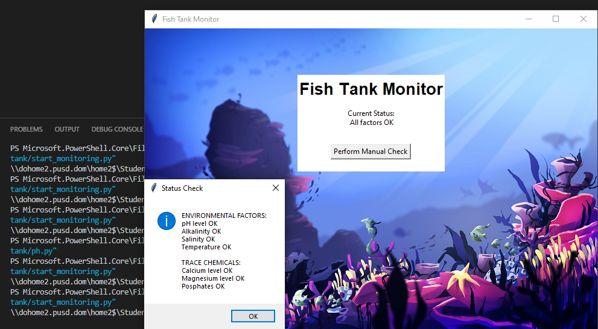

This is my Portfolio Page!

This is my first project, Pizza Creator!
It is a game where you can customize a pizza with toppings of your choosing
A turtle chef brings the toppings from the station to your pizza at random locations

This is my second project, Whack a Turtle
Whack-a-Turtle is a game where you click on turtles to gain points.
They will move to one of the random locations on the screen and change colors.
Green turtles are faster but worth extra points, while red turtles subtract points and delay time.
Scratch Project: Halloween Platformer
This is a halloween-themed platformer where you use arrow keys to get to the house.
There is a time limit of 70 seconds to finish the game and get the candy, and collecting candy corn grants extra time.
There are multiple levels and backgrounds, and you can choose the costume of the character.
Fish Tank Project
In this project we analyzed a simulated phishing attack and debugged a program meant to monitor data in a fish tank.
Peppered Moths Simulation Project

We analyzed a simulation of the population of different colored moths based on the environmental factor pollution.
As the pollution increases, the environment becomes darker colored, which means that the dark moths are selected for since they blend in with their environment better.
However, when there is no pollution, the white moths are favored since they blend in with the environment against predators better.
Lost Rover Project


We think that it is Marsh Lands because our temperature graph was very smooth and constant, which fits the description accurately. Also, the varying sound graph with high maximums could be explained by the constant critter chirping and buzzing. Finally, the light graph was very constant and went from low to high, representing the planet going from night to day.